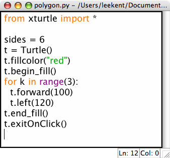
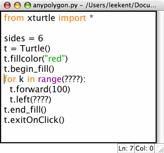
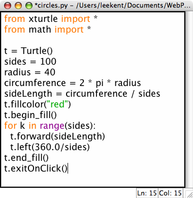

Drawing Polygons
In the last lesson we drew a triangle and a square. We can use that code to draw pentagons, hexagons, and other regular polygons. Here is the triangle code.

Could we generalize this to draw a hexagon? What has to change? What if we create a variable called sides and let it be equal to the number of sides in our polygon. Can we use sides when we write the code?

What do we have to enter for the question marks above?
Drawing Circles
Drawing a circle can be as simple as drawing a polygon with so many sides that it looks like a circle. Modify your program so it draws a circle. HINT: You may want to decrease the length of each of your sides to something small like 5!
Computing the Radius
What is the radius of the circle you just drew? The radius can be approximated by using the formula
Circumference = 2 * PI * Radius
We can use this formula to construct a circle of a specific radius. For instance if we want a circle of radius 40 then we would want a circumference of
Circumference = 2 * PI * 40
or about 250. If we have a 100 sided circle then each "side" in the circle is 2.5 units long. So we can rewrite our code to use this
